Time: 19:00-21:00, Friday, 15 June
Venue: Room B216, New Main Building, Beihang University
Theme:Paternal love
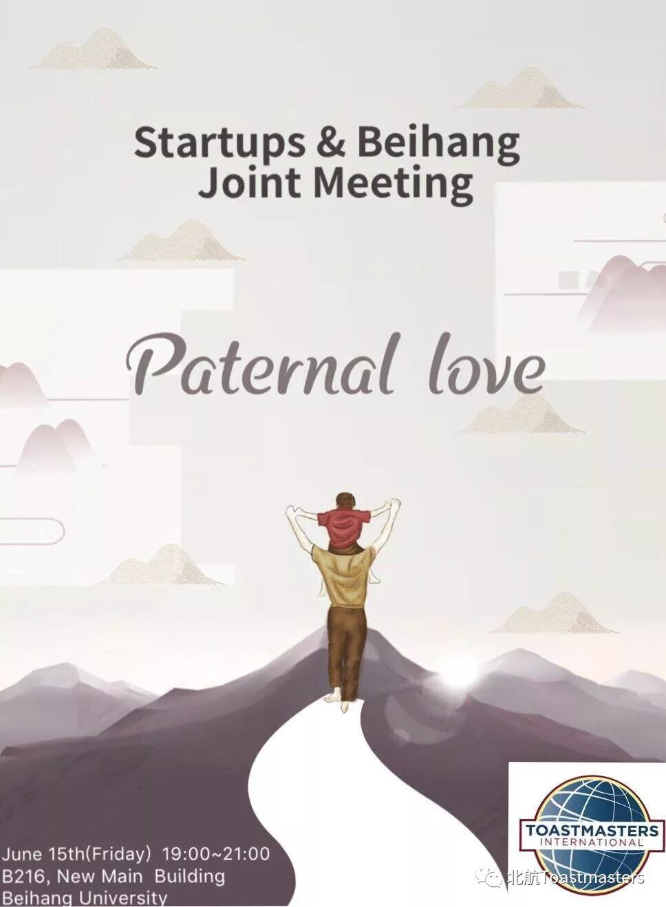
The love of parents is the greatest and selfless love between heaven and earth. Since we came down to the world, our parents began to love us forever. The love of parents is an inborn love for children, a natural love. It is like the heavens and the rain, but no one can defend it. This is the greatest, oldest, most original, greatest, and most wonderful power that can safeguard life. It is the love of parents for us.
SAA& Greeter: Samuel( Beihang)

TM: Claire( Beihang)

GE:Julia (Startups)
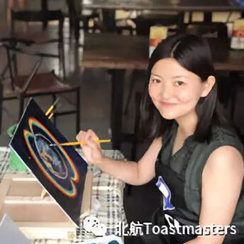
Timer: Justin( Beihang)
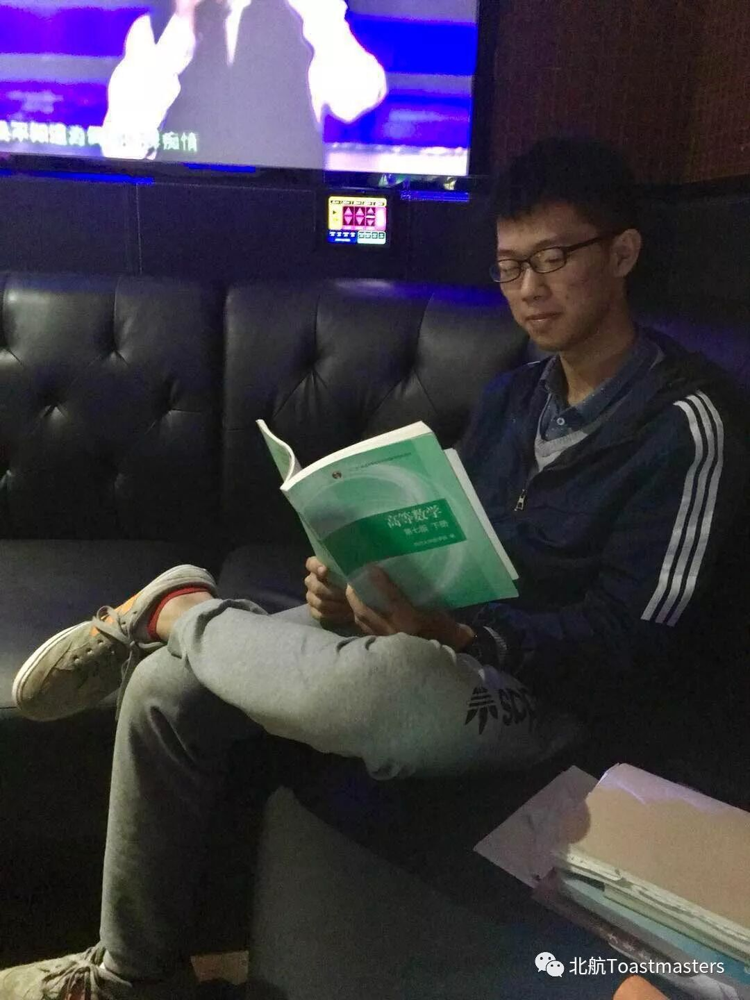
Grammarian: Beryl (Startups)
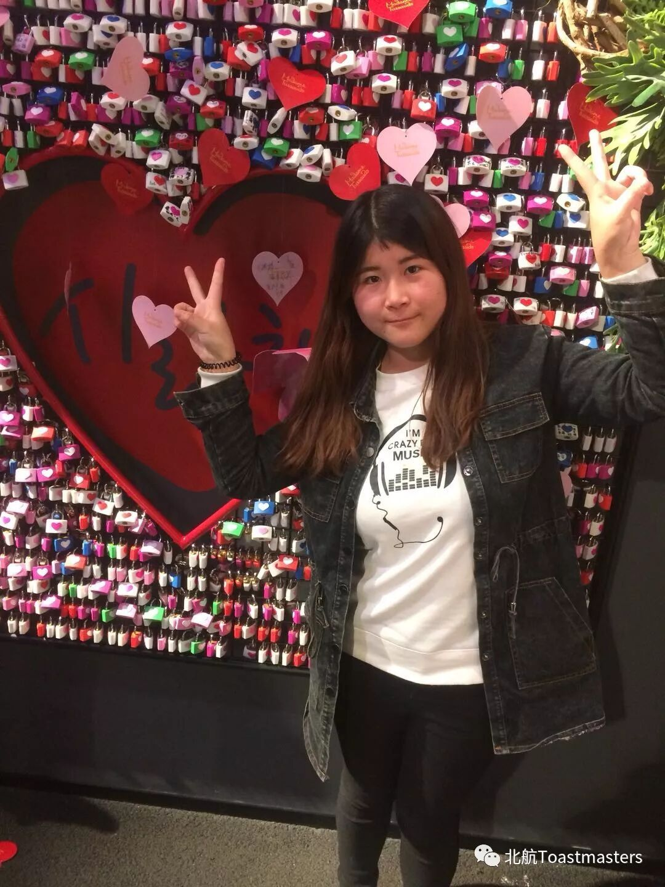
Quizmaster: Allen( Beihang)
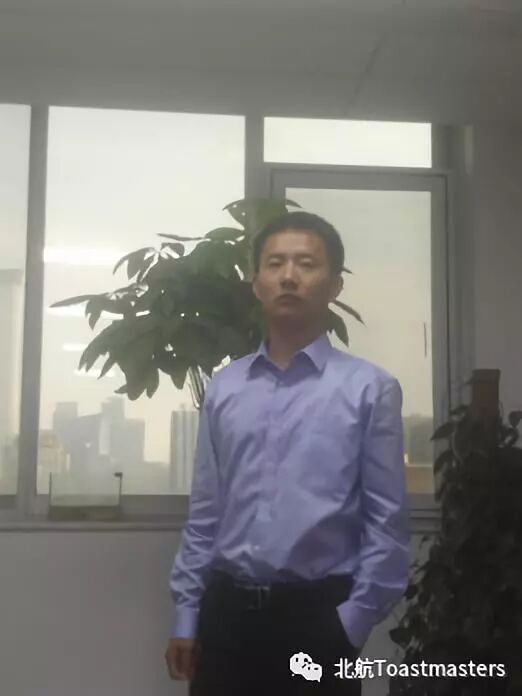
TTM：J(Startups)
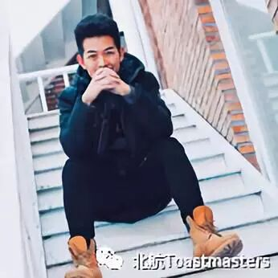
TTE：Kaisense ( Beihang)

Prepared speech
Prepared Speaker1:Sunny (Startups)
Title: Pathways Ice breaker
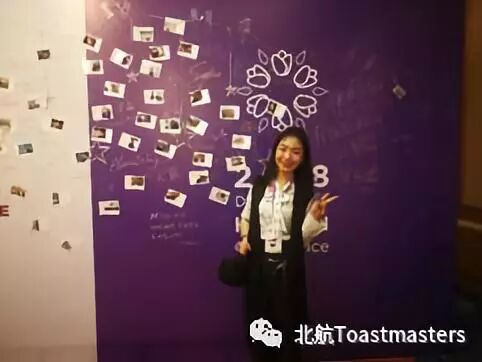
2.prepared Speaker2: Wincher( Beihang)
Title: Pathways Ice breaker
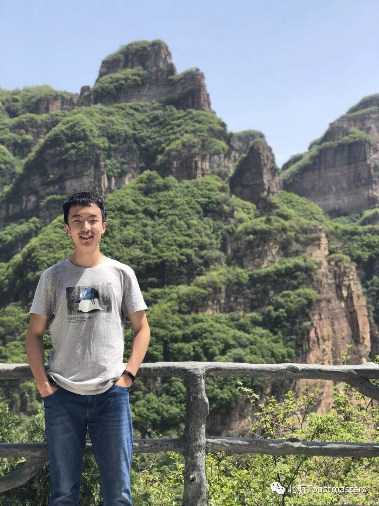
3.Prepared Speaker 3: Kathy (Startups) PS3
Title:Me and Sanbao
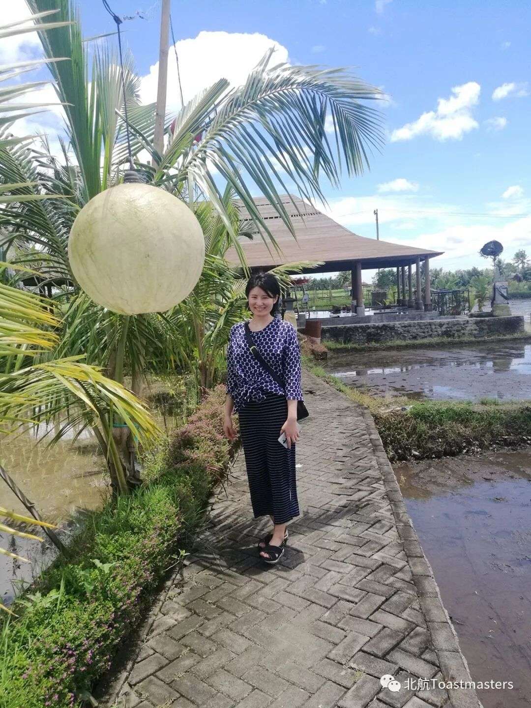
4. Prepared Speaker4: Samuel( Beihang) PS2
Title: keep your own routine
PE1:Michael( Beihang)
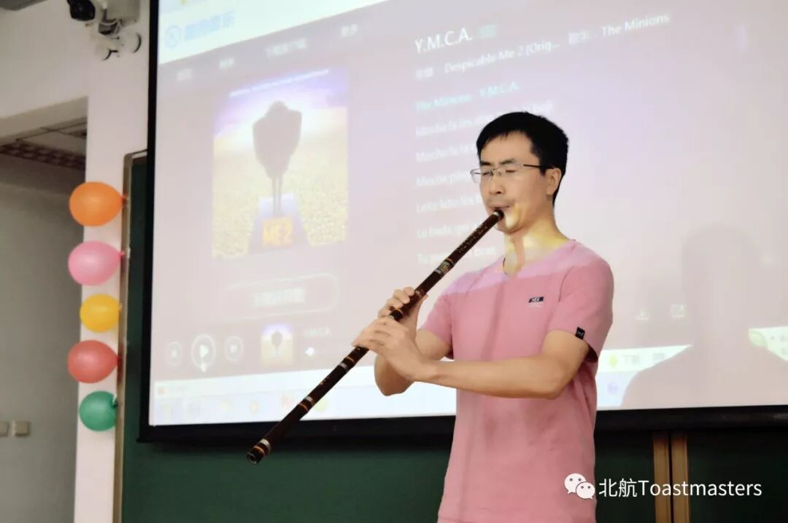
PE2: Lisa(Startups)
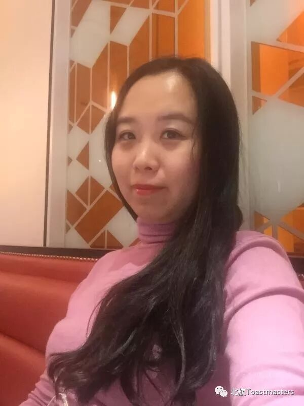
PE3: Cyril( Beihang)
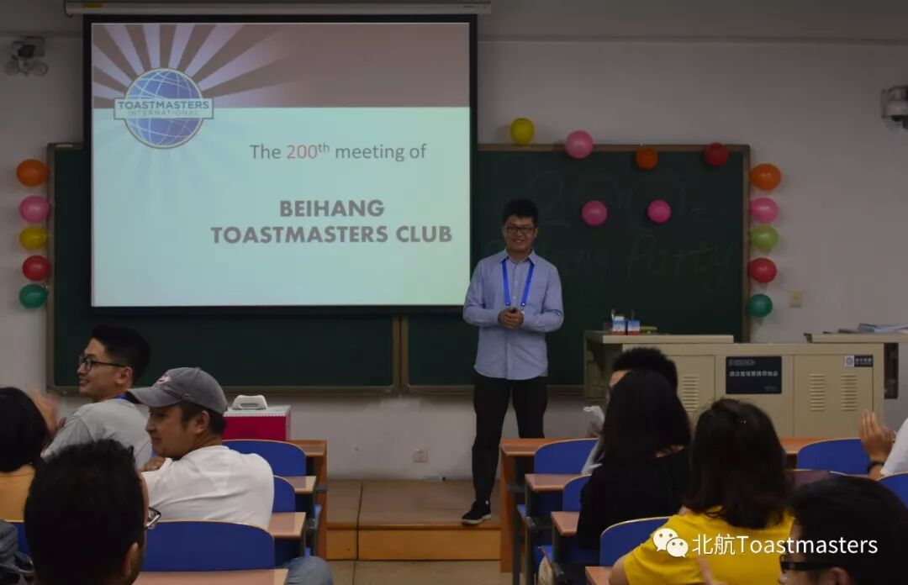
PE4: Jenny (Startups )
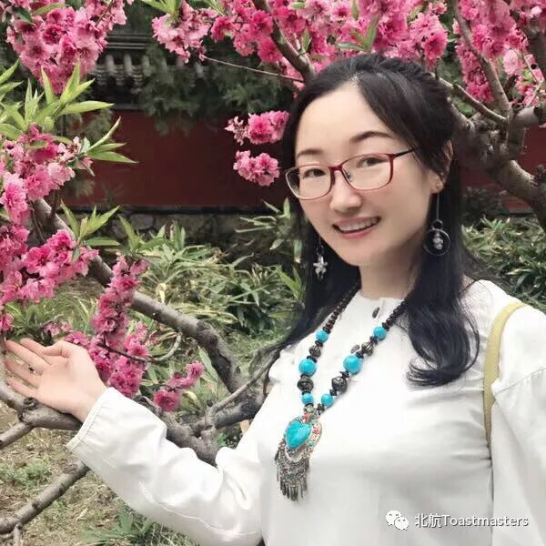
Photographer: Allen(Startups)
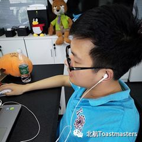
Videotaker:Annie(Beihang)
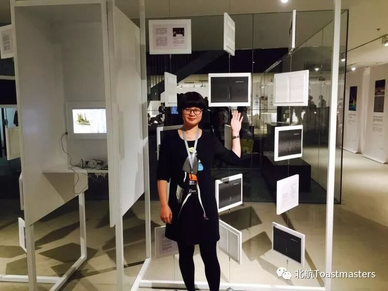
Albert( role backup)
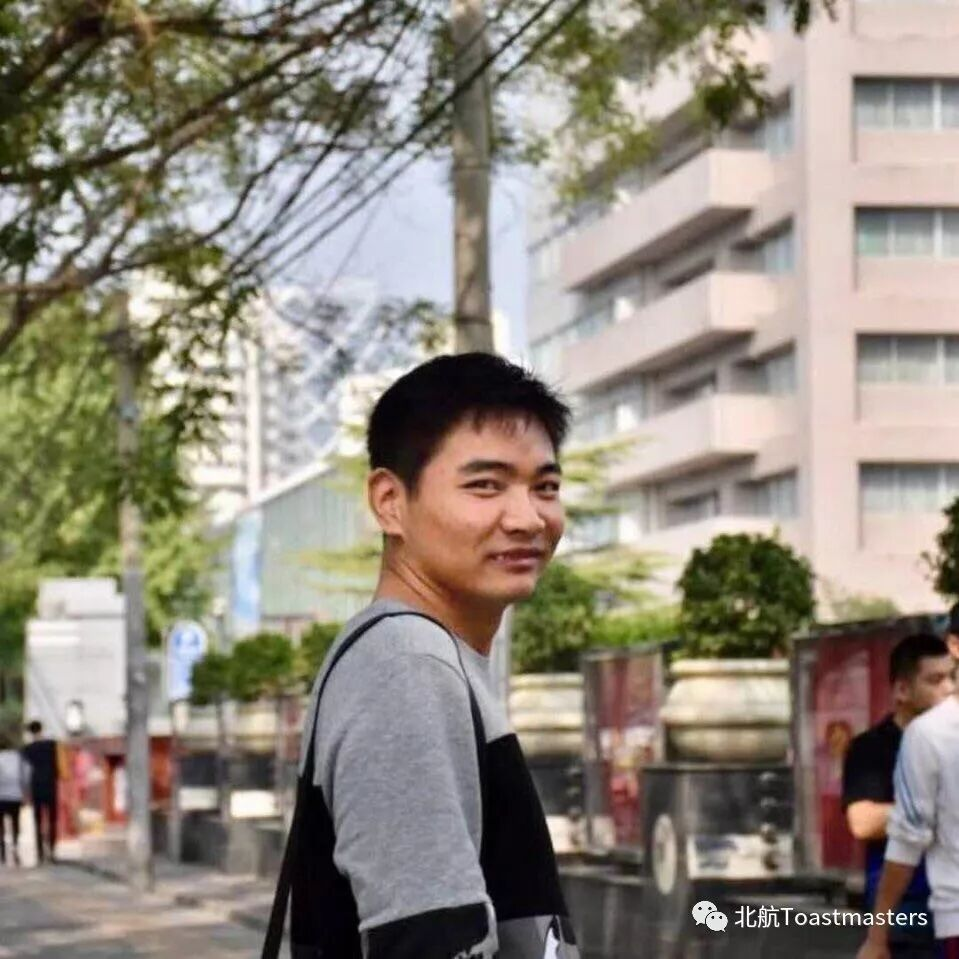
BeihangToastmasters Club is a students' union. At the same time, we belong to a non-profit international organization calledToastmasters International.
Toastmasters International (TI) is a non-profit educational organization that operates clubs worldwide for the purpose of helping members improve their communication, public speaking, and leadership skills.You can find us by the following map of Beihang University.

https://mp.weixin.qq.com/s/j_LtFDvq62UdTdQPThr6vQ
本页为抢救式本地归档，图文已永久保存。